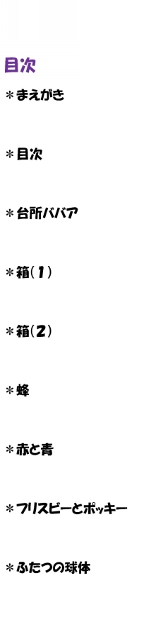

| あなたの寂しさを和らげてくれるかもしれない十二編のごくごく短い物語 | |
| 天出優 | |
| (2014) | |
まえがき
個人的な話で恐縮だが、私は以前、発作的に 胸の奥がすっと冷えてゆくような寂しさ に週に二、三回の頻度で取り憑かれていた。寂しさは短い時には数分、長い時は一時間ぐらい持続した。
散歩するとか、運動するとか、音楽を聴くとか、何か行動を起こして気分を紛らわせれば良かったと、寂しさの発作が治まった後で思うことがあった。しかし、発作の最中は全く余裕がなくて何の対処法も思い浮かんでこなかった。ただただ「 さびし～い 」と冷凍庫みたいになってしまった心の中で感じるだけだった。
私はいつしか寂しさの発作に襲われていない時に、空想を巡らせることを秘かな愉しみとするようになった。最初は巨大な業務用冷凍庫の中で防寒着を着た人影が冷凍庫の電源をオフにしたり固い棒で壁を突いて霜取りしたりするイメージだった。彼ら彼女らが乾いたモップや雑巾で冷凍庫の中に溜まった水気を完全に拭き取ってしまうと、私自身が作業したわけではないのに、妙な達成感や充実感が得られた。
やがて、冷凍庫で作業していた人影は手袋や防寒着を脱ぎ捨て、私が通勤電車の中でぼんやりしている時、お風呂に入って寛いでいる時、寝ている時の夢の中なんかに現われて勝手気ままに行動し始めた。
防寒着を着た人影は実は一人暮らしをしている男だったり老婆だったり子育てを終えた夫婦だったり父と子だったり綺麗な女性だったりした。借金取り立て人、発明家の青年、キャバクラ嬢のこともあった。
本当は彼ら彼女たちは何の意味も担っていないのかもしれない。ただ私の頭の中に勝手に現われて好き勝手に行動していただけかもしれない。しかし、私は幼い頃に両親から読み聞かせてもらった昔話やおとぎ話、学校の国語の授業で習った物語や小説、それまでの読書経験、医学部で学んだメディカルな知識や精神科医としての臨床経験を総動員して、私の頭の中に現われたキャラクターやプロットに自己流の意味づけや解釈を行うことにした。なぜなら、そうしないと、心の中がモヤモヤしてきて、凍えるような寂しさ とは別の 、ウンチが出そうで出ない時のような糞詰まり感に似た不快な感情が体の中で停滞するようになったからだ。
そのため、ここに掲載した物語はどれも私の頭の中に初めて現われた時のイメージとは大きく異なっている。どの物語も最初のイメージを私なりに大きく膨らませたものばかりである。
自分自身の経験を総動員してこの程度の作品か、とも思ったけれど、ともかく、これらの物語を創作することによって、ウンチが出そうで出ない時のような糞詰まり感に似た不快な感情は解消された。また、発作的に胸の奥がすっと冷えてゆくような寂しさに取り憑かれる回数もゼロではないけれどもめっきり減った。
私自身に有効であった自己治療的な試みの産物が他の人に有効であるという保証は全くない。しかし、私と同じような「 心の中がすっと冷えてゆくような寂しさ 」に苦しんでいる人がいて、その人たちが ここに収められた十二編のごくごく短い物語に触れる ことによって、いくらかでも寂しさを和らげることができたとしたら、著者としてこれに優る喜びはない。
二〇一四年七月吉日 天出優

台所ババア
一人暮らしをしている男がいた。その男に不思議なことが起こった。
男が帰宅すると、食卓の上に皿が用意され、冷蔵庫の中には電子レンジでチンすれば出来上がる各種惣菜がタッパーに入れられた状態で準備されるようになったのだ。男が帰宅する時刻に合わせて炊飯器のタイマーもセットされるようになった。要するに、誰かが男のために夕食の準備をするようになったのだ。
男は用意された美味しい料理を食べ、食器の後片付けをしながら、誰が夕食を作ってくれるのだろうと不思議に思った。
男は夕食を作ってくれる人物を確かめたくなった。それで、朝、仕事に行くフリをして外から自宅を見張っていた。すると、夕方、スーパーのビニール袋を提げた見知らぬ二人の老婆が男の玄関のドアを開けて中に入る姿を目撃した。
どうやってオレの自宅の鍵を手に入れたんだ？
老婆たちが男の自宅に侵入した後、男は自宅に戻り、背後から老婆たちに話しかけた。
「いつも夕食ありがとうございます」
老婆たちは驚いた顔をして振り返った。
「見られちまったか」
老婆たちはお互いの顔を見合わせて頷き合った。
「見られた以上はもうここへは来れませんね」
「あなたたちは誰ですか？どうして夕食を作ってくれるのですか？」
「あたしたちは台所ババアだよ。上からのお達しであんたが気付くまで夕食を作ることになったのさ」
「でも、見られた以上はもうここには来れませんよ」
「今日の夕食分まで作ってやる」
老婆たちの言葉通り、翌日から男が帰宅しても夕食は準備されなくなった。
ある朝、男は食卓の上に千円札を一枚置いて仕事に出かけた。男が仕事から帰宅すると夕食がきちんと作られていた。しかし、皿の横に一枚紙が置いてあった。紙にはこう書かれていた。
「どうせなら二千円でしょ」
男は食卓に千円札二枚を置いて仕事に出かけた。しかし、夕食が用意されることはもうなかった。●
箱（１）
彼は会いたくない人物の訪問を受けた。久しぶりの訪問だった。
「そんな嫌な顔をされなくても」
男は笑みを浮かべた。
「あたしは箱を返してもらいたいだけなんです」
「箱？」
「とぼけてもらっちゃ困ります。あの五角形の箱のことですよ」
「ああ、あれか」
男は肯いた。
「もともとは丸い箱だったゾ」
「もともとは丸い箱でしたが、あなたが長く持ち過ぎたせいで五角形に変わってしまったんですよ」
彼は唇を噛んで男を見つめた。
「もうそろそろ」と男は続けた。
「もうそろそろ箱を返してもらえませんかね」
「今は持っていない」
「嘘をついてもらっちゃ困ります」
男はにゅっと広げた掌を突き出した。
「若い頃はまだ使い道があったでしょうが、今となっては中身はもう空っぽでしょ」
「もうしばらく待ってくれないか」
「『待つ』っていつまで？」
男は口を尖らせた。
「お歳を考えていただかないと」
「失礼なっ！」
「もう充分長い間お使いになったじゃありませんか」
「いやまだまだ」
「次にお待ちの方がいらっしゃるんですよ」
男は穏やかな口調で忠告した。
「いずれ、ろくでもないことだけでは済まなくなりますよ」
男の忠告を背中で受け流し、彼は欲望で満たされた街に繰り出した。五角形の箱を携えて。若い頃と変わらない足取りで。●
箱（２）
彼は若い頃、ある不思議な男から丸い箱を借り受けた。彼が所有している間に、丸い箱は五角形に形を変えていた。
彼が中年と呼ばれる年齢に差しかかった頃、ふいに男が現われて、彼に五角形の箱を返却するように促した。男は彼に忠告した。
「さもないと、ろくでもないことだけでは済まなくなりますよ」
男の忠告は嘘ではなかった。
五角形の箱を所有していると、ろくでもないことばかり、とんでもないことばかりが身に降りかかるので、彼は遂に五角形の箱を男に返却することにした。五角形の箱を所有し続けることを諦めたのだ。
「その代わりと言っちゃなんですが、今度はあなたにこの箱をお貸しします」
男は彼に正方形の形をした箱を手渡した。
「この箱はいつまで貸してもらえるのか？」
「いつまででも。死ぬまででも、ようござんすよ」
彼は男から受け取った正方形の箱をテーブルに置き、まじまじと眺めた。
それはもはや箱と呼べる代物ではなかった。正方形の箱は五角形の箱よりずっと重く、彼が蓋を開けると、びっしり土が詰められていて、もはや「諦め」以外の何ものも入れることができなかった。●
蜂
ある一組の子育ての終わった夫婦が森の中を散歩していた。夫は落ちていた枯れ枝の棒を拾い、暇に任せて棒で樹の幹をコツコツと叩いて歩いた。すると、樹の幹の影から一匹の巨大な蜂が現われて夫を目がけて飛んできた。
夫は枯れ枝の棒を振り回して蜂を追い払おうとしたけれど、棒が樹の幹に当たり、誤って棒を折ってしまった。
「早くこの蜂を追い払ってくれ」
夫は妻に叫びながら折れた棒を握り締めたまま、一目散に逃げていった。
妻は地面に咲いていた赤い花を引っこ抜いて宙にかざした。すると、夫が逃げていった方角から一匹の巨大な蜂が戻って来た。
妻は巨大な蜂が怖かったけれど、我慢して引っこ抜いた赤い花を宙にかざし続けた。すると、巨大な蜂は赤い花にとまり、花弁の中に顔を埋めてもぞもぞし始めた。
妻はそろっと赤い花を地面に置き、巨大な蜂が赤い花の蜜を貪り続けている間に逃げ出した。
「あなた！」
妻は声を張り上げて夫を捜した。夫は大きな樹の幹に出来た穴蔵の中に隠れていたけれど、妻の声を聞き付けて外に出た。
「オレをほったらかしてどこへ逃げていたんだ」
夫は妻に怒りをぶちまけた。妻は黙ったまま地面に咲いていた赤い花を引っこ抜いて宙にかざした。すると、遠くから巨大な蜂が彼らの方に近づいてきた。
夫はびっくりして独りで樹の影に隠れた。巨大な蜂は妻が宙にかざしている赤い花にとまってもぞもぞし始めた。
「今のうちに逃げましょう」
経緯を理解した夫はまだ手に握り締めていた役立たずの棒を捨てて歩き出した。急ぎ足で。
「さきほどは怒って悪かった」
夫は妻に謝った。
妻は頷き、地面に落ちていた新しい枯れ枝の棒を拾うと、夫に寄り添いながら後ろを振り返った。●
赤 と 青
平凡な夫婦ではない男女が一緒に暮らしていた。男は青いボールを、女は赤いボールをポケットの中に入れていた。
ある朝、大事な女子会に出かける前に女が男に言った。
「ポケットにボールを入れていると服が膨らんでみっともないから、しばらく預かってよ」
「いやだよ。参加者の女性みんなのポケットが膨らんでいるから、君だけがみっともない、なんてことはないはずさ」
「ボールを持って行くと、息苦しくて困るのよ」
「赤いボールは女が預かることになっているだろう」
「『なっている』ってどういう意味よ？」
「昔からの慣わしだよ」
「とにかく、今日、あたしは大事な女子会に出なくちゃならないのよ。赤いボールで服が膨らんだら恰好が悪いから、あなたが預かっててよ」
男はボールをできるだけ遠くに放り投げて無きものにしたいという誘惑に駆られた。しかし、ボールの赤い色が彼を思い留まらせた。
ボールがなくなったらどうなるのか、実は男も女もよく知らない。何か起こるかもしれないし、何も起こらないかもしれない。
「ジャンケンして決めよう」
男は女にそう提案した。
「俺だってポケットに『青いボール』を入れていると重たいから誰かに預かって貰いたいんだ。ジャンケンで勝った方がボールを二つ預かることにしよう」
「わかったわ」
ジャンケンすると、男が勝った。男は女に青いボールを手渡した。女のドレスの両側のポケットは赤と青のボールで膨らんだ。
「これじゃあ恰好悪すぎて女子会に出られないわ」
女のことがかわいそうになった男は女からボールを預かることにした。但し、赤いボールを。
ポケットに青いボールだけを入れて女子会に参加した女はそれまでの人生で最もよく飲み、よく食べ、豪快に笑った。女は人間関係を豊かにして若い頃の夢だった輸入雑貨の店を始め、成功する。
ポケットに赤いボールを入れて留守番をした男はそれまでの人生の中で最も寛ぎ、爽やかな気分になり、家事を楽しんだ。
男はポケットに赤いボールを入れたまま自宅で絵を描くようになった。そして、たまたま家に侵入した強盗に絵を奪われた。
しばらくして世に現われた男の絵は巷で評判となった。彼は若い頃の夢だった画家になることに成功する。
その後、ふたりはボールを交換したけれど、それぞれの人生を楽しんで一生を終えた。女は店長として生き、男は画家として生きた。●
フリスビーとポッキー
男はゴールド色のフリスビーを一枚大事に保管していた。それは今は亡き男の父親の形見の品だった。
やがて男は結婚し、子どもが生まれた。男の子だった。彼の息子は順調に成長し、公園で元気よく駆けまわる年齢になった。
男は大切に保管していた父親の形見であるフリスビーを携えて息子と公園に出かけた。
男は息子とフリスビーを投げて遊んだが、公園に来ていた見知らぬ女の子の視線を感じてフリスビーを投げる手を止めた。女の子は彼の息子と同じぐらいの年齢だった。
男は女の子を誘った。三人はフリスビーを投げて遊んだ。やがて、女の子の母親が現われ、「娘と遊んでくれたお礼に」とお菓子の箱を男に手渡した。ポッキーだった。
男は女の子の母親に礼を言い、彼女たちが帰った後、公園の縁石に息子と並んで腰かけてポッキーを齧った。男は公園に来ていた他の子どもたちにゴールドのフリスビーを貸してやった。
「ママにも残しておこうね」
息子は父親に提案した。男は肯いた。
息子は口の中に入れているポッキーを味わい、父親は残っているポッキーを見つめてその長さを味わった。●
ふたつの球体
彼ははっと目を覚ました。どうしてかわからないけれど超富裕層に属している彼は幸福の絶頂にあった。彼にはできないことなんてほとんどなかった。もっと控え目に言っても、彼には出来ないことより出来ることの方が多かった。
しかし、彼がいくら欲しても手に入らないものもあった。そのひとつが球体Ｘである。
球体Ｘさえ手に入れば彼は全財産を失っても惜しくないと思った。しかし、球体Ｘはこの世にありそうでなかった。彼は焦った。出来るだけ早い時期に球体Ｘを手に入れて安心したかった。さもないと取り返しのつかないことになる。しかし、球体Ｘは彼の前には現われなかった。球体Ｘは既に誰かに破壊されて、もうこの世には存在しないという人もいた。
彼は球体Ｘを手に入れられなかったけれど、幸福の絶頂にあることに変わりなかった。妻は優しく、子どもたちは順調に成長し、愛人たちは申し分なかった。だからこそ、彼は一刻も早く球体Ｘを手に入れたかった。
彼ははっと目を覚ました。どうしてかわからないけれど富裕層ではない彼は幸福とはいえなかった。彼にはできることなんてほとんどなかった。もっと控え目に言っても、彼には出来ることより出来ないことの方が多かった。
しかし、彼はいくら捨てたくても捨てられないものがあった。そのひとつが球体Ｙである。
球体Ｙさえ捨てることができれば彼は幸せになれるのにと思った。しかし、球体Ｙはなかなか彼から離れようとしなかった。彼は焦った。出来るだけ球体Ｙを遠ざけて不安を取り除きたかった。さもないと取り返しのつかないことになる。しかし、球体Ｙは彼のもとを去ろうとしなかった。球体Ｙは既にどこにでも無数に存在して、もう誰も取り除くことはできないという人もいた。
彼は球体Ｙを捨て去ることはできなかったせいか、幸福とはいえない境遇にいることに変わりなかった。夫婦喧嘩は絶えず、子どもたちは世間を騒がせ、愛人など持てる身分ではなかった。だからこそ、一刻も早く球体Ｙを捨て去りたかった。
彼ははっと目を覚ました。●
大きなお世話
小糠雨の降る朝だった。
男がいつものように⑧番出口から外に出ると、長身のスラリとした女が赤い傘を差して横断歩道の前に立っていた。彼は通勤の途中だった。
女は芸能人みたいに黒いサングラスをかけていた。本当に芸能人かもしれない。女は浮世離れした雰囲気を漂わせていた。
黒い傘を開きながら、男が足を止めて綺麗な女性だなと思って女を見つめていると、彼女が振り返って男の方を見、微笑んだ。横断歩道の歩行者用信号が青になっても女は動かなかった。
男が女に近づいて何か話しかけようとした時、彼は背中を小突かれた。男が振り返ると、独りの見知らぬ老婆が立っていた。
老婆は男の心の内を見透かすようにこう言った。
「話しかけるってどんな話をするつもりなのさ。おまえにそんな度胸なんてない癖に」
男は老婆の言葉に腹を立てたけれど、老婆に構っている暇はないとも思った。ふと横断歩道の方を見ると、サングラスをした長身の女の姿がない。
男は赤い傘を探したけれど、見つけることができなかった。
「くそババア」
男は老婆に悪態をついてから出勤した。
次の日から、男は綺麗な女を見かけた時刻に⑧番出口を使って出勤することにした。もちろん彼女と再会するために。しかし、何日経っても男は女に再会できなかった。
ある朝、男が⑧番出口から外に出ると、横断歩道の近くの縁石に老婆が座っていた。老婆は男を手招きした。
男は老婆ではなくサングラスをかけた女と再会したかったので老婆を無視して女を探しながら歩こうと思ったけれど、老婆が膝の上に白く輝く物体を載せていることに気付いて彼女の方に近づいた。
白く輝く物体は水晶玉だった。
老婆は黙ったまま水晶玉を指差した。男は水晶玉を見た。水晶玉の中には数人の人影が映っていた。男は目を凝らした。
黒服の男たちがドラム缶を取り囲んでいる。あのサングラスをかけた綺麗な女もドラム缶を取り囲んでいる人影の中にいる。港か埠頭の岸壁の近くのようだ。
ドラム缶の中には男がいる。声は聞こえて来なかったけれど、男は泣き叫んでいるようだ。水晶玉の上の縁からパラパラと灰色の塊が落ちてくる。柔らかいコンクリートか何かが。ドラム缶の中に居た男は灰色の塊に覆われて見えなくなる。黒服の男たちがドラム缶を抱えて海の中に放り投げる。すると、水晶玉の中が陽炎みたいにゆらゆらと揺れて半透明の白い擦りガラス状の物質に置き換わった。
「おしまい」
老婆はそう言ってニッコリ笑った。
男は老婆から啓示を受けたけれど、まだ若かった。彼は老婆から水晶玉を見せられた後も、毎朝出勤前に⑧番出口から外に出て、あのサングラスをかけた背の高い綺麗な女を探し続けた。●
ゴキブリ嫌い
ゴキブリ嫌いの爺さんとゴキブリが嫌いでも好きでもない婆さんが二人で仲良く暮らしていた。
ある夏の昼間、爺さんが台所で二人分の昼食を拵えていると、一匹の巨大な土色の蜘蛛が天井からパラリとステンレスの流し台の上に落ちてきた。爺さんが蛇口から水を出していたので、大蜘蛛は水流の中でもがきながら溺れかけた。
しばらくの間、爺さんは水道水に満たされた流し台の中でもがき苦しむ大蜘蛛の姿を眺めていたけれど、「この大きな蜘蛛ならゴキブリを食べて退治してくれるかもしれない」と思い、蛇口の水を止め、大蜘蛛を流し台の中から逃がしてやった。
ある晩、爺さんが寝ていると、夢の中に助けた大蜘蛛が現われた。
「おまえはあの日、流し台で溺れかけたワシを助けてくれた。まず、礼を言う。ありがとう。しかし、ワシはおまえが思っているようなゴキブリを食べる種類の蜘蛛ではない」
「わかってますよ」と爺さんは答えた。大蜘蛛を助けた後も、爺さんは何度も家の中でゴキブリに遭遇して婆さんに助けを求めたことがあったのだ。
「ワシはゴキブリを食べはせんが、もっと凄い力を持っている。命を助けてくれたお礼に、おまえの願い事をひとつだけ叶えてやろう。何なりと申してみい」
爺さんはゴキブリの存在しない世界で暮らしたいと思ったけれど、それを願い事にするよりは、愛する婆さんの願い事を叶えてやりたいと思った。そこで爺さんは夢の中に現われた大蜘蛛に頼んだ。婆さんの願い事を叶えてやってくれと。
大蜘蛛は爺さんの夢から消えると、隣で寝ている婆さんの夢の中に現われた。その頃、婆さんは神棚に奉納した後の御下がりの饅頭をお腹いっぱい食べている夢を見ていた。婆さんは白い饅頭の上に土色の大蜘蛛が現われたのでたいそう驚いた。
「おまえの願い事をひとつだけ叶えてやろう。何なりと申してみい」
大蜘蛛の言葉を聞いて婆さんは更に驚いた。
「なぜ私の願い事を叶えてくださるのですか？」
婆さんは大蜘蛛に尋ねた。
「おまえに順番が回って来たからじゃ」
大蜘蛛はすべてを語らなかった。
「願い事を申してみい」
「そうだねえ。願い事ねえ」
婆さんは何を願い事にしようか考えた。
必要以上に長生きしたいとは思わなかった婆さんは「じゃあ、願い事をひとつ」と切り出して大蜘蛛に頼んだ。
「ゴキブリのいない世界に連れて行って下さい」
「そんな願いで良いのか」
婆さんは肯いた。大蜘蛛は「わかった」と答えて婆さんの夢の中から消えた。
次の日の朝、老夫婦の遺体がアパートの二階で見つかった。世俗の原理に則って司法解剖が行われ、二人の死因はクモ膜下出血であることが判明した。●
債鬼の情け
ある町に取り立ての厳しいことで有名な債鬼が住んでいた。彼は町工場の社長に銭を貸していた。しかし、社長は借金の返済期日になっても、返済のための銭を用立てることができなかった。
町工場の社長は債鬼に懇願した。借金の返済をあと一週間延ばしてもらえないかと。
町工場の社長から懇願された時、債鬼は生まれて初めて借り手のことが哀れに思えた。取り立ての厳しい債鬼がそんな気持ちになったのは生まれて初めてのことだった。債鬼は社長の借金を一週間引き延ばしてやることにした。
一週間が経ち、債鬼が社長に返済を迫る期日がやってきた。取り立てが終わったら行きつけのキャバクラに行って冷たいシャンパンを注文しよう。そんなことを考えながら債鬼は社長の町工場を訪れた。しかし、一週間の間に社長一家は夜逃げしていた。
債鬼は地団太を踏んで悔しがり、社長一家を発見したらただではおかないゾと心に誓った。
社長に夜逃げされたために節約モードに入っていた債鬼は、その夜、行きつけのキャバクラへは行かず、散財を控えた。
次の日の朝、債鬼は朝のニュースで行きつけのキャバクラが放火されて店内に居た人たちが全員焼死したことを知った。同棲していたキャバ嬢から別れ話を告げられて逆上した無職の若い男が灯油を撒いて放火したのは、もし社長が夜逃げしていなかったら債鬼が店を訪れていた時間帯だった。彼は贔屓にしていたキャバ嬢が焼死したことを人づてに知らされた。
債鬼は命拾いをした。彼は思った。あの世に稼いだ銭を持って行くことはできない。死んだら稼いだ銭はすべて無駄になるのだと。彼はまたこういう風にも思った。とはいえ、人間はいつ死ぬかわからないから銭を粗末にすることはできない。貸した銭を踏み倒されて黙っているわけにはいかないと。
債鬼は夜逃げした社長の足取りを追うことにした。手順どおりに。
社長一家はなかなか見つからなかった。しかし、債鬼は思いのほか辛くはなかった。踏み倒された銭は惜しかったけれど、社長一家が見つからなければいいのに、と願った。どこまでも逃げ切れ、とさえ願った。●
通貨先物自動取引装置
ある町に取り立ての厳しいことで有名な債鬼がいた。彼は通貨先物自動取引装置の発明を目指している青年に銭を貸していた。しかし、青年は借金の返済期日になっても、あと一歩というところで装置を完成させることができなかった。
青年は債鬼に懇願した。借金の返済をあと一週間延ばしてもらえないかと。
青年から懇願された時、債鬼は生まれて初めて取り立てに迷いが生じた。どうして迷ってしまったのか債鬼自身にもよくわからなかった。
債鬼は青年の借金を一週間延期することにした。その一週間の間に、青年は通貨先物自動取引装置を完成させることができた。
青年の通帳の残高はみるみるうちに膨らんでゆき、彼は一日で大金をこしらえ、債鬼から借りていた借金と利息を完済した。
「返済を待ってくださったお礼に、あなたにだけ私の発明した通貨先物自動取引装置をインストールしたノート型パソコンをプレゼント致します」
債鬼は以前、通貨先物取引で大損した経験があったので、青年の言葉に半信半疑だった。しかし、無料で貰えるならと、青年の申し出を受け入れることにした。
債鬼は青年から通貨先物自動取引装置の使い方の説明を受けた後、さっそく試してみた。債鬼が所有しているほとんど使っていなかった証券口座を利用して。すると、通貨先物自動取引装置を介すると、債鬼の証券口座の残高が一日で数百倍に膨らんだ。
「これは打ち出の小槌だぜ」
債鬼は全財産を証券口座に集めて通貨先物自動取引装置を作動させた。債鬼は一週間で超富裕層の仲間入りを果たした。債鬼は闇金融を廃業し、駅前のキャバクラに毎日通い、贔屓にしているキャバクラ嬢に貢いだ。しかし、いくら散財しても、元債鬼の懐は寒くならなかった。
ある日、元債鬼のお気に入りのキャバクラ嬢が彼に尋ねた。
「金融業ってそんなに儲かるの？」
元債鬼は彼女に答えた。
「今は仕事らしい仕事はしていないさ」
元債鬼はお気に入りのキャバクラ嬢にだけ青年から譲り受けた通貨先物自動取引装置のことを喋った。
「絶対にナイショだからな」
元債鬼は賑やかな店内で嬢に耳打ちした。
「わかった、絶対にナイショにする」
嬢は元債鬼にこう続けた。
「ねえ、これからは一緒に暮らさない？」
「いいのか？」
元債鬼は耳を疑った。なぜならそれまでいくら彼が口説いても彼女は応じなかったから。
元債鬼は三十歳年下のお気に入りのキャバクラ嬢のマンションで彼女と同棲することになった。元債鬼は幸福の絶頂にあった。通貨先物自動取引装置も絶好調だった。
しかし、ある朝、元債鬼が目を覚ますと、嬢の姿が消えていた。彼のノート型パソコンも一緒に。
元債鬼はスマホを使って証券口座にログインし、口座残高をチェックした。すると、数十億円あった彼の残高がみるみるうちに減少していく様が見て取れた。
元債鬼は同棲していたお気に入りのキャバ嬢が彼のノート型パソコンを盗み出して勝手に操作したのだと確信した。しかし、彼は彼女に通貨先物自動取引装置の操作方法を教えていなかったので、彼女は何かとんでもないアイコンをクリックしたに違いない。数時間で彼の口座残高はゼロになった。
無一文になってしまった元債鬼はキャバ嬢のマンションにあった、たぶん彼女が客から貰った宝石とかブランド物のバッグとか液晶テレビとか金目の物をすべて売り払い、数百万の銭をこしらえ、通貨先物自動取引装置を発明した青年のもとを訪れた。元債鬼から銭を借りていた時、青年はみすぼらしいアパートに住んでいたけれど、今は立派な豪邸に住んでいた。
シャンデリアのぶら下がった大広間で、青年は元債鬼から事情を聞くと、膝を叩いた。
「わかりました。通貨先物自動取引装置をインストールしたノート型パソコンを改めてお譲りしましょう」
元債鬼は青年に何度も頭を下げて礼を言った。
「今度は誰にも通貨先物自動取引装置のことを喋っちゃダメですよ」
「誰にも喋りません、絶対に」
元債鬼は別の証券会社に新しい口座を開設して、キャバ嬢の持ち物を売り払って拵えた数百万の銭を元手にして通貨先物自動取引装置を使って取引を再開した。すると、一週間もすれば彼はまた超富裕層の仲間入りをすることができた。
元債鬼は再び駅前のキャバクラに足繁く通い出した。しかし、同棲していたお気に入りのキャバ嬢が失踪したままだったので寂しい思いに浸っていた。
「バカな娘だナ」
ある夜、元債鬼がお気に入りではないキャバ嬢たちに囲まれて高価なワインをチビチビ飲んでいると、目の前にお気に入りだったキャバ嬢が現われた。無一文になった彼女は再び同じキャバクラで雇って貰ったのだ。
「本当にごめんなさい」
彼女は元債鬼に謝った。
「許す」
元債鬼はとても嬉しそうな表情で言い放った。
元債鬼と彼女は再び一緒に暮らすことになった。三十歳の年の差結婚だったけれど、二人は男の子ひとりと女の子ひとりを授かった。今度は債鬼は通貨先物自動取引装置をインストールしたノート型パソコンを厳重に保管して妻に指一本触らせなかった。妻は自分で通貨先物取引をしなくてもいつでも自由に銭を使うことができたので不満はなかった。元債鬼は幸福な生涯を全うした。彼は死ぬ直前に妻子に通貨先物自動取引装置の扱い方をきちんと伝授してから息を引き取った。●
羊飼のいる風景
彼の手元には、いま一枚の絵ハガキが置いてある。
「道，羊飼のいる風景」。
あの有名なミレーの描いた絵である。絵ハガキの隅の方に「個人蔵」と小さく記されている。
その絵は画面のほぼ中央に一本の畔道が描かれていて、奥の方に森が描かれていた。森の入口あたりに人がひとりと羊か番犬と思われる動物らしき白い影が見て取れた。
全体的に落ち着いたトーンの絵である。絵ハガキの送り主は離婚した元妻だ。
その絵ハガキは元妻が約二十年前に彼に送ったものである。その頃、彼と元妻は同じ職場で働いていた。
彼はその絵ハガキをロンドンで買い求めたナショナルギャラリーの画集の中で見つけた。もう十何年も開いたことのなかった画集である。まさかそんなところに元妻から送られてきた絵ハガキを挟んでいたなんてすっかり忘れていた。
彼は学生時代に友人とヨーロッパ旅行に出かけてロンドンに滞在した際にナショナルギャラリーを訪れ、その画集を購入した。ナショナルギャラリーの傍のトラファルガー広場に鳩がたくさんいたことを覚えている。
久しぶりに画集を開く気になったのは、元妻と一緒にマンションを出ていった長男が高校二年生になり、修学旅行でロンドンに行くことになったと聞かされたからである。彼は画集のことを思い出し、何かの参考になればと思って本棚の隅で埃を被っていたその画集を引っ張り出してきた。しかし、後で長男に聞いたら「大英博物館」はコースに入っているけれど「ナショナルギャラリー」はコースに入ってないとのことだった。自由行動の時間にも行くつもりはないという。
彼は長男に画集を渡す計画を中止して画集を本棚に戻し、たまたま発見した元妻からの絵ハガキを、今は事務机として使っている食卓の引き出しの中に仕舞った。通帳や印鑑やクリニックの診察券や体温計などと一緒にして。
結婚する前の元妻は彼宛のその絵ハガキに、ひとりで東京で開かれたミレー展に行った時の様子を書いていた。
ミレー展へいってきました。たくさんの人で会場は混雑していました。絵画はストレス解消に効果的ですね。明るい色彩の絵をみると気持ちがやわらぎホッとします。私が気に入った絵は絵ハガキとして販売されておらず残念でした。この道が明るく輝く未来に続いていますように。
食卓の引き出しを開ければ、保険証書などの書類に覆い隠されていることはあるけれど、それを取り除いてやれば、絵はがきの中の「道」はいつもずっと彼方まで続いている。羊飼が立っている場所から更に奥へ奥へと伸びている。
彼が畑の中の「道」を歩いていると、羊飼が向こうの方からやってきた。
羊飼はすれ違い様に彼に尋ねた。
「ひとりで歩いてるのかい？」
「そうだよ」
「奥さんは？」
「離婚したんだ」
「なんてこった、ぜんぜん知らなかったよ」
「無理もないよ。ずっと画集の中に挟まっていたんだから」
彼は羊飼に尋ねた。
「今日はもう帰るのかい？」
「ああ、もう日暮れだからね」
「気をつけてね」
「ありがと。元気出しなよ。まだまだ道は続いてるんだから」
こうして彼は羊飼の青年と別れた。
羊飼の青年と別れた後、彼はぼんやり考える。元妻は覚えているだろうかと。二十年以上も前にミレーの絵ハガキを彼に送ったことを。
絵ハガキの裏に「この道が明るく輝く未来に続いていますように」と書き記していたことを。●
あとがき
最後まで読んで下さってありがとう。野暮かもしれないけれど、それぞれの作品に対して簡単な説明を付け加えさせて頂く。
「 台所ババア 」は「覚醒」をテーマにしている。「 箱（１） 」は「執着」をテーマに創作した。「 箱（２） 」は「箱（１）」の続編で、本文中に書いたように「諦め」をテーマにしている。「 蜂 」のテーマは「反転」である。「 赤と青 」のテーマは「交替」、「 フリスビーとポッキー 」のテーマは「人生」である。「 ふたつの球体 」は「生と死」をテーマにしている。それに「夢」と「現実」を交錯させようとした。「 大きなお世話 」は「理想」をテーマにしている。「 ゴキブリ嫌い 」のテーマは「自己犠牲」である。「 債鬼の情け 」と「 通貨先物自動取引装置 」は同じ骨組みのシチュエーションが「ご褒美」の扱い方を巡ってパックリ二つに分裂した作品である。そのため、お互いが同胞みたいな物語に仕上がった。「 羊飼のいる風景 」は実際に手元にあった絵葉書からイメージを膨らませ、「こんなはずではなかった」という思いを核にして創作した。十二編の作品の中ではいちばん個人的体験が色濃く出てしまった作品ではないかと思っている。
ナンチャッテネ。
二〇一四年七月吉日 天出優